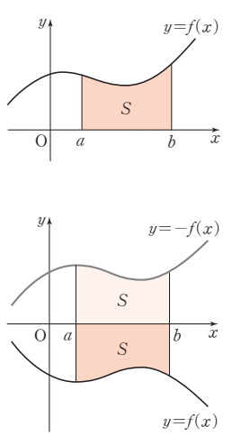
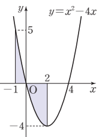
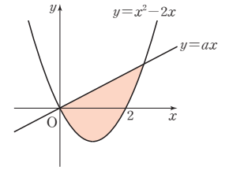

2026학년도 2학기 | 미적분 I
미적분 I 수업 학습지
00. 생각 열기 (Warm-up & Connection)
차시 23에서 정적분 \(\displaystyle\int_a^b f(x)\,dx\)을 "부호 있는 면적"으로 정의했다. \(f(x) \geq 0\)이면 정적분 \(=\) 도형 넓이지만, \(f(x) \leq 0\)이면 정적분이 음수가 되어 도형 넓이와 부호가 어긋난다. 그렇다면 "곡선과 \(x\)축으로 둘러싸인 도형의 넓이"를 정적분으로 어떻게 표현할까?
[개방형 발문] 아래 두 그림에서 곡선 \(y = f(x)\)와 \(x\)축으로 둘러싸인 도형의 넓이를 \(S_1\), 곡선 \(y = g(x)\)와 \(x\)축으로 둘러싸인 도형의 넓이를 \(S_2\)라고 하자.

(1) \(S_1\)을 정적분으로 나타내면? \( \displaystyle\int_0^3 f(x)\,dx \). (2) \(S_2\)를 정적분으로 나타내면? \( \displaystyle -\int_0^3 g(x)\,dx \) 또는 \(\displaystyle\int_0^3 |g(x)|\,dx\). 왜 \(S_2\)에는 \(-\)나 절댓값이 필요할까? (비상 미적분 I P.126 · 개념 탐구 참고)
[연결] 정적분 \(\int_a^b f(x)\,dx\)는 부호 있는 양 — \(x\)축 위 부분은 \(+\), 아래 부분은 \(-\)로 잡힌다. 그러나 "도형의 넓이"는 항상 \(\geq 0\). 두 값을 일치시키려면 음의 부분에 \(-\)를 붙여 양수로 되돌려야 한다. 이를 한 번에 처리하는 도구가 바로 절댓값 \(|f(x)|\)이다. 오늘 우리는 ① 곡선과 \(x\)축이 둘러싸는 넓이의 정적분 공식 \(S = \displaystyle\int_a^b |f(x)|\,dx\), ② \(f\)의 부호가 바뀌는 점(=\(x\)축 교점)을 기준으로 한 구간 분할, ③ "정적분 값"과 "넓이"의 명확한 구별까지 익힌다.
01. 개념 구성 (Conceptual Foundation)
1 \(f(x) \geq 0\) vs. \(f(x) \leq 0\) — 부호별 공식
함수 \(f(x)\)가 닫힌구간 \([a, b]\)에서 연속일 때, 곡선 \(y = f(x)\)와 \(x\)축 및 두 직선 \(x = a\), \(x = b\)로 둘러싸인 도형의 넓이 \(S\):

- ① \([a, b]\)에서 \(f(x) \geq 0\)일 때: \(S = \) \( \displaystyle\int_a^b f(x)\,dx \)
- ② \([a, b]\)에서 \(f(x) \leq 0\)일 때: \(S = \) \( \displaystyle\int_a^b \{-f(x)\}\,dx = -\int_a^b f(x)\,dx \)
핵심: ②의 경우 \(y = -f(x)\)는 \(y = f(x)\)를 \(x\)축에 대칭이동한 곡선이며 \(-f(x) \geq 0\). 둘이 같은 모양·같은 넓이이므로 정적분 부호만 뒤집으면 끝. (비상 미적분 I P.126 · 넓이 ❶❷ 참고)
2 부호가 섞일 때 — 절댓값 \(|f(x)|\) 한 줄 공식
\([a, b]\)에서 \(f(x)\)가 양·음을 모두 가질 때(예: \([a, c]\)에서 \(f \geq 0\), \([c, b]\)에서 \(f \leq 0\))는 부호별로 구간을 분할한다.
![case 3 — [a,c]에서 f(x)≥0(x축 위), [c,b]에서 f(x)≤0(x축 아래)인 곡선 y=f(x). 두 영역 모두 색칠된 넓이 S로 표시](images/calc_26_concept_case3.png)
\( S = \displaystyle\int_a^c f(x)\,dx + \int_c^b \{-f(x)\}\,dx = \int_a^c |f(x)|\,dx + \int_c^b |f(x)|\,dx \)
\( = \) \( \displaystyle\int_a^b |f(x)|\,dx \)
일반화: \([a, b]\)에서 연속함수 \(f\)에 대하여 곡선과 \(x\)축 사이 도형의 넓이는 부호 분기 없이 다음 한 줄로 통합된다.
\( \displaystyle S = \int_a^b |f(x)|\,dx \)
실전 절차: ① \(f(x) = 0\)의 근을 찾아 부호 변화 지점을 파악. ② 각 부호 구간에서 절댓값을 풀어(부호 부분에는 \(-\)) 적분. ③ 모두 더해 합산. (비상 미적분 I P.127 · 곡선과 x축 사이의 넓이 정리 참고)
3 예제 — 곡선 \(y = x^2 - 3x + 2\)와 \(x\)축이 둘러싸는 넓이
풀이 흐름:
- ① 영점: \(x^2 - 3x + 2 = (x - 1)(x - 2) = 0\) \(\Rightarrow\) \(x = 1, 2\). 적분 구간 \([1, 2]\).
- ② 부호: \(x \in [1, 2]\)에서 \(y = (x-1)(x-2) \leq 0\) (포물선이 \(x\)축 아래).
- ③ 절댓값 풀기: \(|x^2 - 3x + 2| = -(x^2 - 3x + 2) = -x^2 + 3x - 2\).
- ④ 적분: \( S = \displaystyle\int_1^2 (-x^2 + 3x - 2)\,dx = \) \( \big[-\tfrac{1}{3}x^3 + \tfrac{3}{2}x^2 - 2x\big]_1^2 = \tfrac{1}{6} \)
핵심: \(x\)축과의 교점이 곧 적분 구간이며, 구간 안 부호가 한 종류로 정해지므로 절댓값을 한 번에 벗긴다. (비상 미적분 I P.127 · 예제 1 참고)
4 \(\displaystyle\int_a^b f(x)\,dx\) vs. 넓이 \(\displaystyle\int_a^b |f(x)|\,dx\) — 절대 혼동 금지
- 📌 정적분 \(\displaystyle\int_a^b f(x)\,dx\): 부호 있는 면적. \(x\)축 위 \(+\), 아래 \(-\). 음수일 수 있음.
- 📌 넓이 \(\displaystyle\int_a^b |f(x)|\,dx\): 항상 \(\geq 0\). \(x\)축 위·아래 모두 양수로 합산.
- 📌 \(f(x) \geq 0\)인 구간에서만 두 값이 일치. 그 외에는 다르다.
예: \(\displaystyle\int_1^2 (x^2 - 3x + 2)\,dx = -\tfrac{1}{6}\) (음의 정적분), 그러나 곡선과 \(x\)축이 둘러싸는 넓이는 \(\tfrac{1}{6}\). 차시 23 Level 3 함정의 표준 사례. (비상 미적분 I P.127 · 예제 1 풀이 비교 참고)
02. 수준별 훈련 (Level Training)
Level 1
곡선과 \(x\)축의 교점 \(\to\) 적분 구간 \(\to\) 넓이 직접 계산
💡 힌트 보기
(2) \(3x^2(x - 2) = 3x^3 - 6x^2\). 영점 \(0, 2\). 구간 \([0, 2]\)에서 \(x^2 \geq 0,\ (x - 2) \leq 0 \Rightarrow y \leq 0\). \( S = \int_0^2 -(3x^3 - 6x^2)\,dx = \int_0^2 (-3x^3 + 6x^2)\,dx = \big[-\tfrac{3}{4}x^4 + 2x^3\big]_0^2 = -12 + 16 = 4\).
💡 힌트 보기
(2) \(-x(x+2)(x-2) = -x(x^2 - 4) = -x^3 + 4x\). \(x \in [0, 4]\)에서 영점은 \(x = 0, 2\). \([0, 2]\)에서 \(y \geq 0\), \([2, 4]\)에서 \(y \leq 0\). \(S = \int_0^2 (-x^3 + 4x)\,dx + \int_2^4 (x^3 - 4x)\,dx = 4 + 36 = 40\).

💡 힌트 보기
\( S = \int_{-1}^{0}(x^2 - 4x)\,dx + \int_{0}^{2}(-x^2 + 4x)\,dx = \big[\tfrac{1}{3}x^3 - 2x^2\big]_{-1}^{0} + \big[-\tfrac{1}{3}x^3 + 2x^2\big]_{0}^{2} = \tfrac{7}{3} + \tfrac{16}{3} = \tfrac{23}{3}\).
Level 2
상수 결정·접선·평행이동 등 한 단계 응용
💡 힌트 보기
💡 힌트 보기
💡 힌트 보기
Level 3
"틀려야 는다!" 정적분 값 vs. 넓이 — 부호 함정 직격

🚨 선생님의 함정 경고 (클릭하여 펼치기)
"이등분"이라는 말 때문에 단순히 \(S = 2 \cdot S_\text{아래}\) 식을 세우려다 막힌다. 핵심은 도형이 직선과 곡선이 만나는 두 점 \(x = 0, x = a + 2\)로 정해진다는 것.
STEP 1 — 교점: \(x^2 - 2x = ax \Rightarrow x(x - (a + 2)) = 0 \Rightarrow x = 0,\ a + 2\). 도형 구간 \([0, a + 2]\).
STEP 2 — 위·아래 식별: \(x \in [0, a + 2]\)에서 \(ax \geq x^2 - 2x\) (직선이 위). 즉 두 곡선 사이 영역은 \(y = ax\) 아래·\(y = x^2 - 2x\) 위.
STEP 3 — 전체 넓이 \(S\): \(S = \int_0^{a+2}\{ax - (x^2 - 2x)\}\,dx = \int_0^{a+2}\{-x^2 + (a+2)x\}\,dx = \big[-\tfrac{1}{3}x^3 + \tfrac{a+2}{2}x^2\big]_0^{a+2} = \tfrac{(a+2)^3}{6}\).
STEP 4 — \(x\)축 아래 부분 \(S_1\) (포물선 \(\leq 0\)인 부분): \(y = x^2 - 2x \leq 0\)인 구간 \([0, 2]\). 곡선 \(y = x^2 - 2x\)와 \(x\)축이 둘러싸는 넓이 \(S_1 = \int_0^2 -(x^2 - 2x)\,dx = \big[-\tfrac{1}{3}x^3 + x^2\big]_0^2 = \tfrac{4}{3}\).
STEP 5 — 이등분 조건: 도형이 \(x\)축에 의해 이등분되므로 아래쪽 영역 \(S_1 = \tfrac{S}{2}\). 즉 \(\tfrac{4}{3} = \tfrac{1}{2} \cdot \tfrac{(a+2)^3}{6} = \tfrac{(a+2)^3}{12}\). \(\Rightarrow (a + 2)^3 = 16\).
결론: \((a + 2)^3 = 16\).
핵심 통찰: "도형이 \(x\)축에 의해 이등분"은 "x축 아래쪽 부분의 넓이가 전체 넓이의 절반"이라는 뜻. \(x\)축이 잘라낸 양쪽이 정적분 부호와 무관하게 "도형 넓이"로 다뤄져야 한다. 정적분 값 \(= 0\)과 헷갈리지 말 것 — 이는 단순 넓이 분할 조건이다.
03. 형성평가 (Final Check)
💡 풀이 전략
⭐ 도전 문제 1
📖 출처: 수능특강 수학Ⅱ · 정적분의 활용 · 유제 1
난이도 ★★★ (학습지 max+2, 6분) · 핵심: 중근 인수를 가진 다항함수와 \(x\)축이 둘러싸는 넓이. 전개 후 단일 구간 정적분으로 즉답 — 차시 26 핵심 절차의 직접 응용
📖 풀이 흐름 보기 (직접 풀어본 후 펼치기)
- STEP 1 — 영점과 부호 분석: \(x^2(x - 3)^2 = 0 \Rightarrow x = 0\) (중근), \(x = 3\) (중근). 두 점 모두에서 \(x\)축에 접함. \(x^2 \geq 0\), \((x - 3)^2 \geq 0\)이므로 모든 \(x\)에서 \(y \geq 0\). 적분 구간은 \([0, 3]\), 절댓값 불필요.
- STEP 2 — 전개: \(x^2(x - 3)^2 = x^2(x^2 - 6x + 9) = x^4 - 6x^3 + 9x^2\). 다항식으로 펼친 뒤 항별 적분 적용.
- STEP 3 — 정적분 계산: \(S = \displaystyle\int_0^3 (x^4 - 6x^3 + 9x^2)\,dx = \big[\tfrac{x^5}{5} - \tfrac{3x^4}{2} + 3x^3\big]_0^3 = \tfrac{243}{5} - \tfrac{243}{2} + 81\).
- STEP 4 — 통분 합산: \(\tfrac{243}{5} - \tfrac{243}{2} + 81 = \tfrac{486 - 1215 + 810}{10} = \tfrac{81}{10}\). 정답: ① \(\dfrac{81}{10}\)
핵심: 인수 형태가 \((x - a)^2(x - b)^2\)이면 두 영점 모두 \(x\)축에 접 \(\Rightarrow\) 곡선이 \(x\)축을 횡단하지 않고 한쪽에만 위치. 부호 분할이 필요 없는 특수 케이스. 차시 26의 "전개 후 \(\int x^n\,dx = \tfrac{x^{n+1}}{n+1}\)" 절차가 직접 적용되는 표준형. 통분 시 분모 10으로 맞추는 것이 계산 포인트.
⭐ 도전 문제 2
📖 출처: 2009년 7월 학력평가 가형 7번
난이도 ★★★ (학습지 max+2, 7분) · 핵심: 곡선과 \(x\)축이 만드는 세 영역의 넓이가 등차수열을 이루는 조건 \(\Leftrightarrow 2S_2 = S_1 + S_3\). 부호 분기 정적분 + 등차수열의 결합으로 \(\displaystyle\int_0^k f\,dx = S_1 - S_2 + S_3 = S_2\)라는 우아한 환원이 핵심

📖 풀이 흐름 보기 (직접 풀어본 후 펼치기)
- STEP 1 — 영점·부호 파악: \(f(x) = (x - 1)(x - 4)\). \(x\)축 교점 \(x = 1, 4\). 구간별 부호: \([0, 1]\)에서 \(f \geq 0\) (영역 \(S_1\)), \([1, 4]\)에서 \(f \leq 0\) (영역 \(S_2\), \(x\)축 아래), \([4, k]\)에서 \(f \geq 0\) (영역 \(S_3\)).
- STEP 2 — 정적분-넓이 관계: 정적분 \(\displaystyle\int_0^k f(x)\,dx\)는 부호 있는 면적의 합이므로 \(\displaystyle\int_0^k f\,dx = S_1 - S_2 + S_3\). 한편 넓이의 합은 \(\displaystyle\int_0^k |f|\,dx = S_1 + S_2 + S_3\)로 다름에 주의.
- STEP 3 — 등차수열 조건: \(S_1, S_2, S_3\) 등차수열 \(\Leftrightarrow 2S_2 = S_1 + S_3\). 즉 \(S_1 + S_3 = 2S_2\).
- STEP 4 — 정적분으로 환원: \(\displaystyle\int_0^k f\,dx = S_1 - S_2 + S_3 = (S_1 + S_3) - S_2 = 2S_2 - S_2 = S_2\). \(S_3\)와 \(k\)를 따로 계산하지 않고 \(S_2\) 하나로 환원되는 우아한 구조.
- STEP 5 — \(S_2\) 계산: \(S_2 = \displaystyle\int_1^4 -(x^2 - 5x + 4)\,dx = \int_1^4 (-x^2 + 5x - 4)\,dx = \big[-\tfrac{1}{3}x^3 + \tfrac{5}{2}x^2 - 4x\big]_1^4\). \(x = 4\)에서 \(-\tfrac{64}{3} + 40 - 16 = -\tfrac{64}{3} + 24 = \tfrac{8}{3}\). \(x = 1\)에서 \(-\tfrac{1}{3} + \tfrac{5}{2} - 4 = -\tfrac{2}{6} + \tfrac{15}{6} - \tfrac{24}{6} = -\tfrac{11}{6}\). 따라서 \(S_2 = \tfrac{8}{3} - \big(-\tfrac{11}{6}\big) = \tfrac{16}{6} + \tfrac{11}{6} = \tfrac{27}{6} = \tfrac{9}{2}\). 따라서 \(\displaystyle\int_0^k f(x)\,dx = S_2 = \dfrac{9}{2}\). 정답: ④ \(\dfrac{9}{2}\)
핵심: "정적분 = 부호 있는 면적"과 "넓이 = 절댓값 면적"의 차이를 활용한 우아한 평가원 문제. 등차수열 조건 \(2S_2 = S_1 + S_3\)이 정적분 식 \(\int_0^k f = S_1 - S_2 + S_3\)에 정확히 흡수되어 \(S_2\) 하나로 환원되는 구조. 차시 26의 부호 분기 + 등차수열 결합의 모범 응용.
04. 메타인지 성찰 (Exit Ticket)
스마트폰으로 우측 QR코드를 스캔하여, 아래 3가지 유형 중 하나 이상을 체크하고 통합 서술형으로 작성해 제출한다.